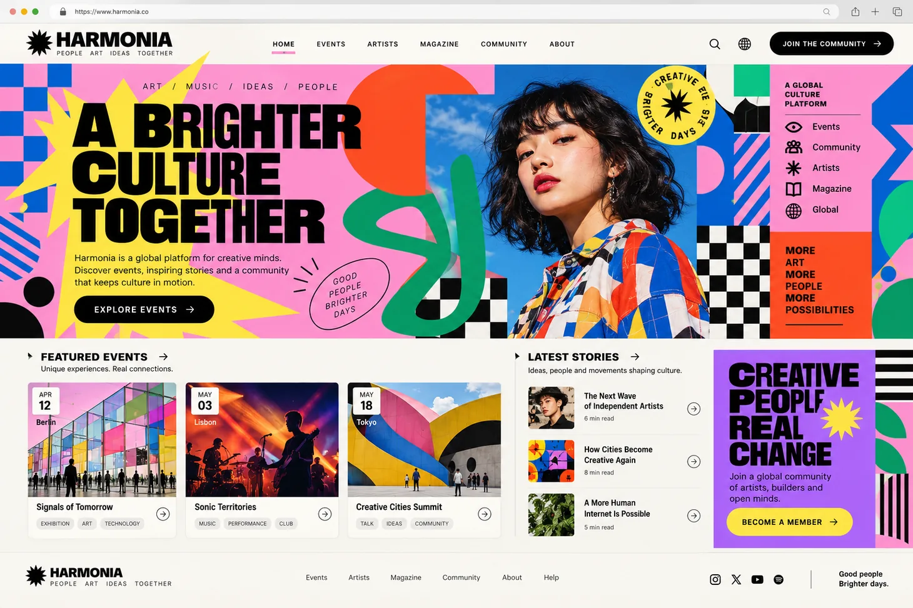
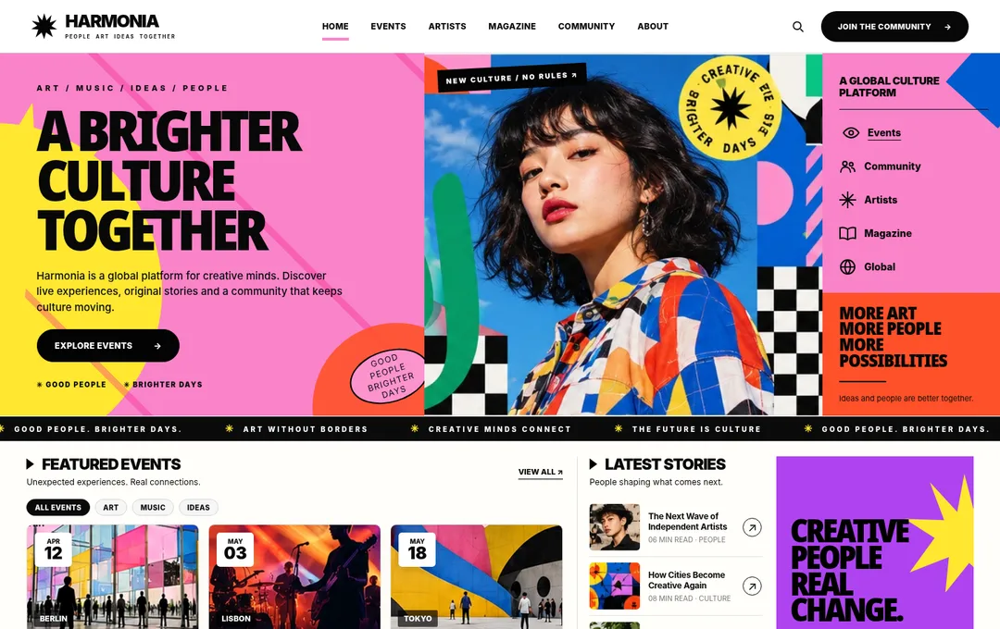

选择你的展览色彩
二十种风格，无限种可能
选一种风格，做你的网站。带走参考图、生图提示词与开发指令，把下一页，交给你的想象力。
从概念，到可以触摸的网页
概念图决定视觉方向，代码让它可以使用。对照同一案例，看看想象如何落地。


风格图鉴 / 20 个不同的世界
先体验真实网页，再用喜欢的风格开始创作。
20 个案例
试试「香氛」「作品集」「AI」或「极简」。
从喜欢，到你的作品。
体验可交互网页，对照概念图，选出适合你项目的视觉方向。
填入品牌、网站用途和主要行动，让提示词围绕你的内容展开。
带走参考图、项目简报与分步指令，完成生图、准备素材、前端开发和检查。